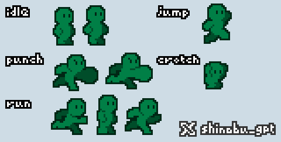
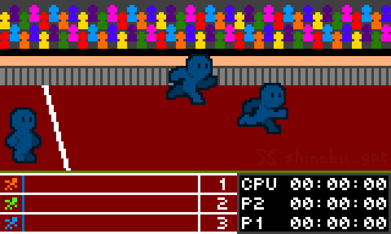
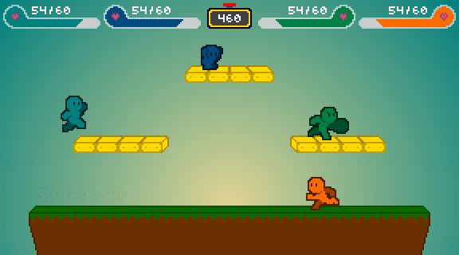

shinobu_works
back to art
Mini-Fig & Game Mock-up
A mini-figure character design paired with pixel art game screen mock-ups.
Pixel Art



◤ about
A set of related pixel art pieces — a mini-figure character design alongside game screen mock-ups exploring how that character might exist in a playable context. The figure itself came first, then the mock-ups grew out of thinking about what kind of game world it would inhabit: what the UI would look like, how the environment would frame the character, what the overall feel of a game built around it might be.